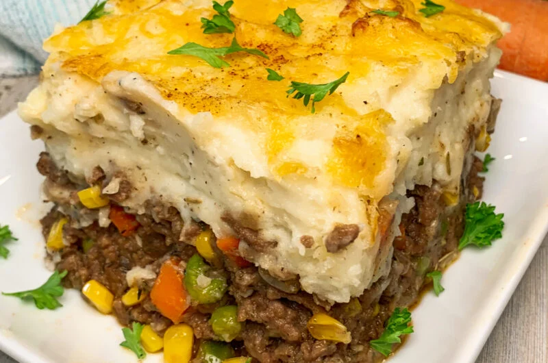

Shepherds Pie
Shepherds Pie

Description
A pie made from ground beef, with mashed potatoes
on top, then grated cheese.
Once assembled, cook in the oven at 425F for twenty
minutes, then serve with garden peas.
Ingredients
- 1/2 lb ground beef
- 1 medium onion
- 1 clove of garlic
- 1 teaspoon of bouillon
- 7 medium potatoes
- 1/4 butter stick
- 1 tablespoon milk or cream
- 1/4 strong cheddar cheese, grated
Steps
- Brown ground beef in a skillet
- Dissolve bouillon in one cup boiled water
- Add diluted bouillon to ground beef
- Heat until water steams and evaporates, while stirring
- Stir in chopped onions and diced garlic clove
- Cover and simmer for 30 minutes, stirring every 5 minutes
- Boil potatoes then mash with butter and milk/cream
- Spread mash evenly over top of ground beef in skillet
- Sprinkle all grated cheese on top
- Place in stove at 425F for twenty minutes